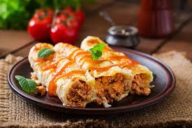

Spinach and Ricotta Cannelloni
A quick and easy cannelloni recipe for your special occasions.

Recipe
When I was young, my mother always told me to start every recipe with
long and unrelated story of my life. Back in 1965...
Ingredients
- 200g ricotta
- 150g wilted spinach
- 250g beschamel
- 500g dried cannelloni
Method
- Mix ricotta with the wilted spinach
- Fill the dried cannelloni with the mixture
- Add a base layer of beschamel to your tray
- Fill tray with your filled cannelloni
- Top with the remaining beschamel and add parmesan
- Back for 30 minutes or until bubbling